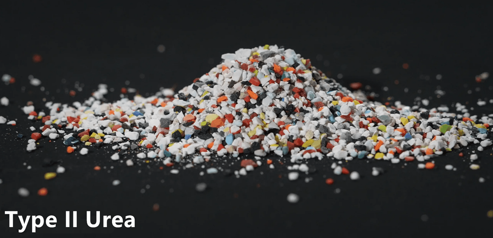

塑料磨料珠常用于脱漆、涂层去除、压力喷砂、粉末涂料、去毛刺、表面处理和模具清洁。 塑料磨料介质用于脱漆和翻新钢材、铝材、橡胶、复合材料、汽车、卡车、飞机、直升机、船只和摩托车。 塑料磨料提供所有标准尺寸，适用于去毛刺应用：低温去毛刺介质、聚碳酸酯、尼龙聚酰胺和聚苯乙烯珠。 使用塑料介质喷砂可避免损坏精密基材，因此是硬质磨料材料和化学剥离的绝佳替代品。 塑料磨料通常可以重复回收利用，提供出色的成本效益。
我们提供两种形式的塑料磨料
II型（尿素，坚硬耐用）
III型（三聚氰胺，塑料磨料中最硬最激进的）
项目 | 技术指标 | |
类型 Ⅱ | 类型 Ⅲ | |
氯含量 | 1% | 1% |
PH值 | 4-8 | 4-8 |
电导率(us/cm) | 100 | 100 |
堆积密度 (g/cm3) | 0.6-0.7 | 0.6-0.7 |
颜色 | 白色或多色混合 | 白色或多色混合 |
巴氏硬度 (HB a) | 54-62 | 64-72 |
定性分析 | 脲醛树脂 | 三聚氰胺树脂 |
除漆率 (平方英尺/分钟) | 0.15 | 0.15 |
主动性 (毫克/平方厘米) | 0.5 | 3 |
消耗率（一个周期） | 13% | 13% |
粒度 | 12-16#(1.70-1.20mm),16-20#(1.20-0.85mm) 20-30#(0.85-0.60mm),30-40#(0.60-0.43mm) 40-60#(0.43-0.25mm),60-100#(0.25-0.15mm) | |
我们是喷砂机、转鼓抛丸机、喷砂机、热喷涂枪、喷砂柜、抛丸室、压力喷砂柜、金属化枪的制造商、供应商和出口商，位于中国江苏，以低价提供最优质的产品。 表面抛光喷砂室认为，对于任何企业来说，质量都是必须的，我们致力于此。 我们的主要目标是通过提供最好的产品来满足客户，我们致力于质量诚信和业务透明度。
为了能够为您的要求报价，请提供以下信息：
1. 所需粒度（您可以从上述选择或提供自己的范围）
2. 所需包装
3. 所需数量和交货时间表。
4. 目的港
5. 付款条件。
6. 目的港卸货率（如果是散货）。
7. 可能影响报价的任何其他要点。
我们还可以根据买家的要求，按FOB条款提供任何数量的散装未分级材料。